Grad School 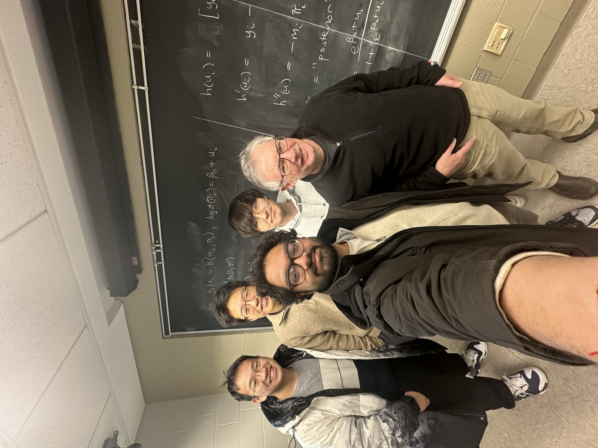 Last class of linear models my first semester of grad school with my cohort and Professor Jim Booth. 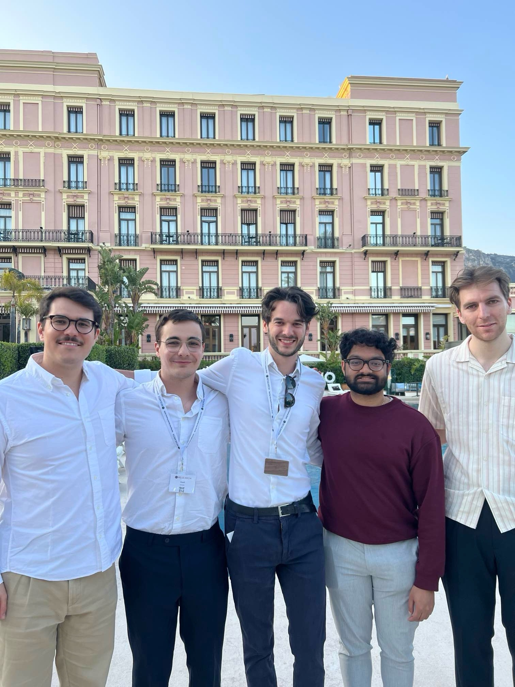 With colleagues at a G-Research event in Nice, France. My first machine learning conference at ICML 2026. 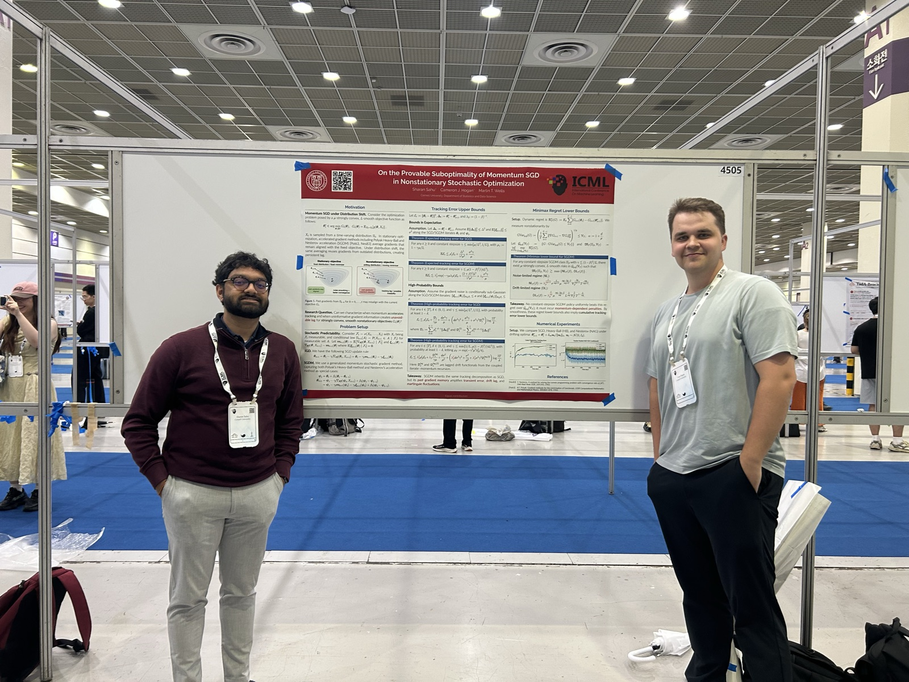 Presenting our poster at ICML 2026. 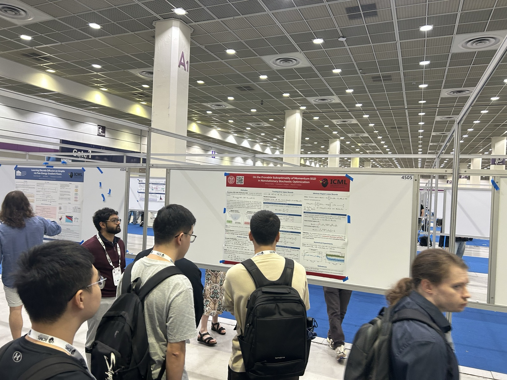 Talking through the poster with fellow attendees at ICML 2026. Friends & Cornell Life 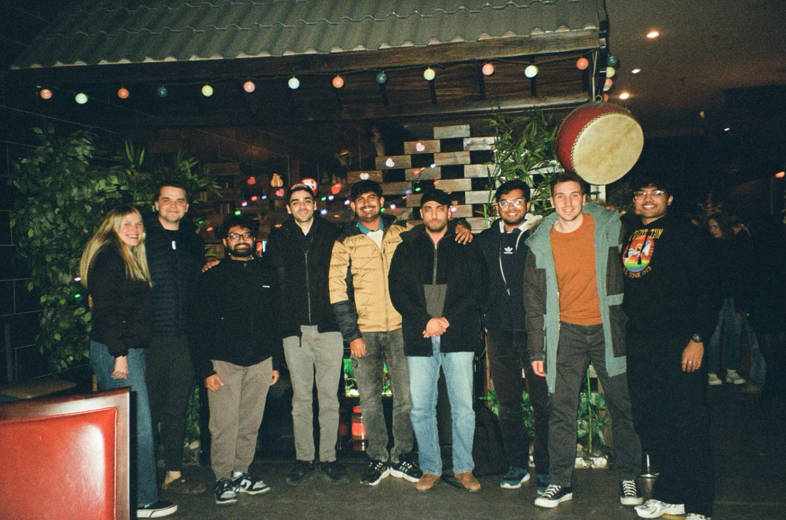 A night out with friends in Ithaca. 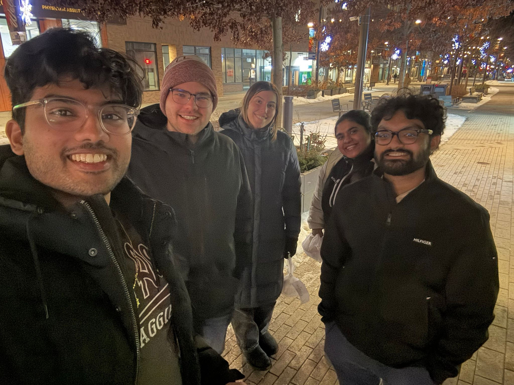 Winter evening on the Ithaca Commons. 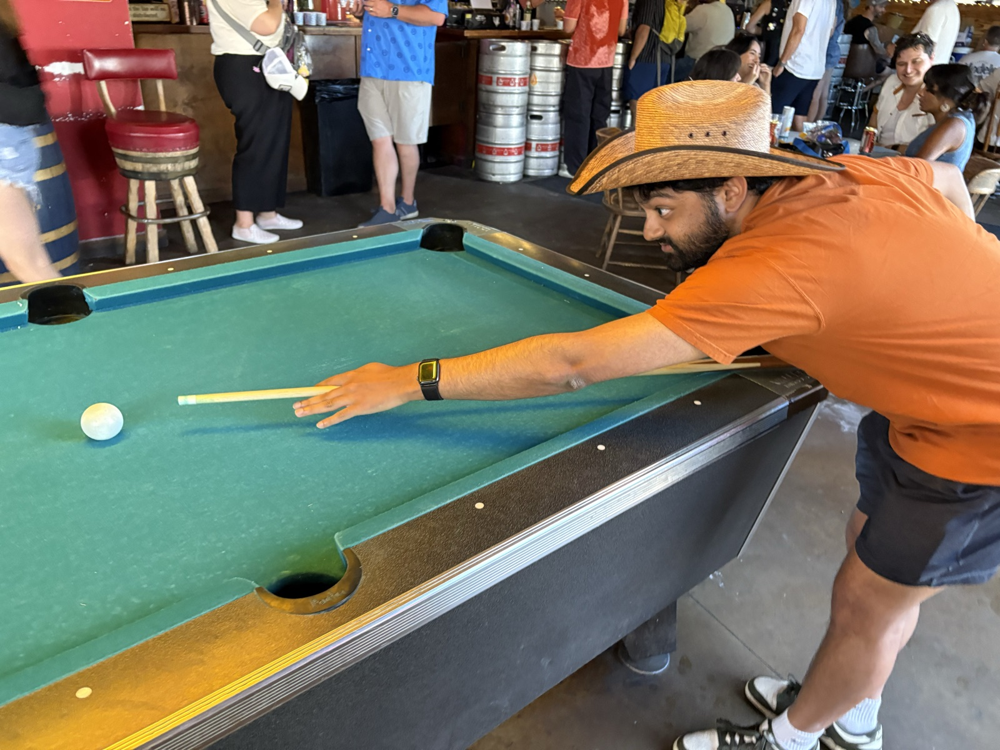 Shooting pool during Fall break in Austin, Texas. 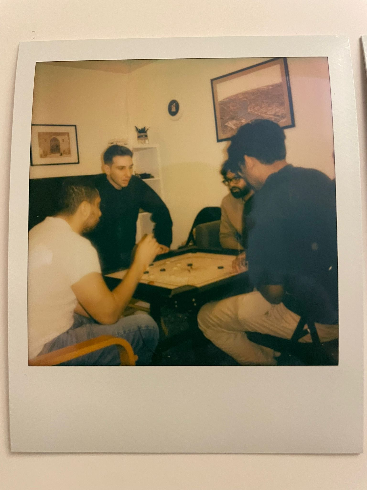 Carrom night with friends. Food Festivals 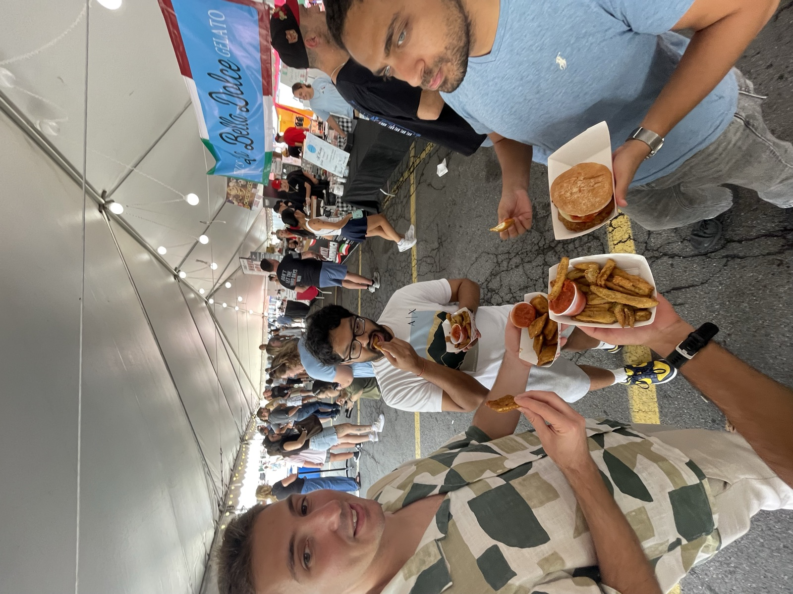 Enjoying some food at a local food festival. 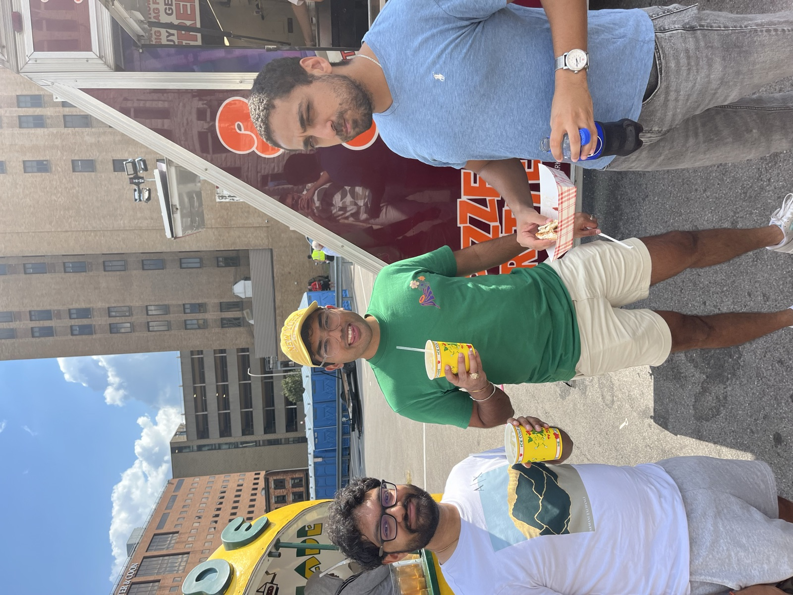 Enjoying some lemonade in Syracuse. Travel 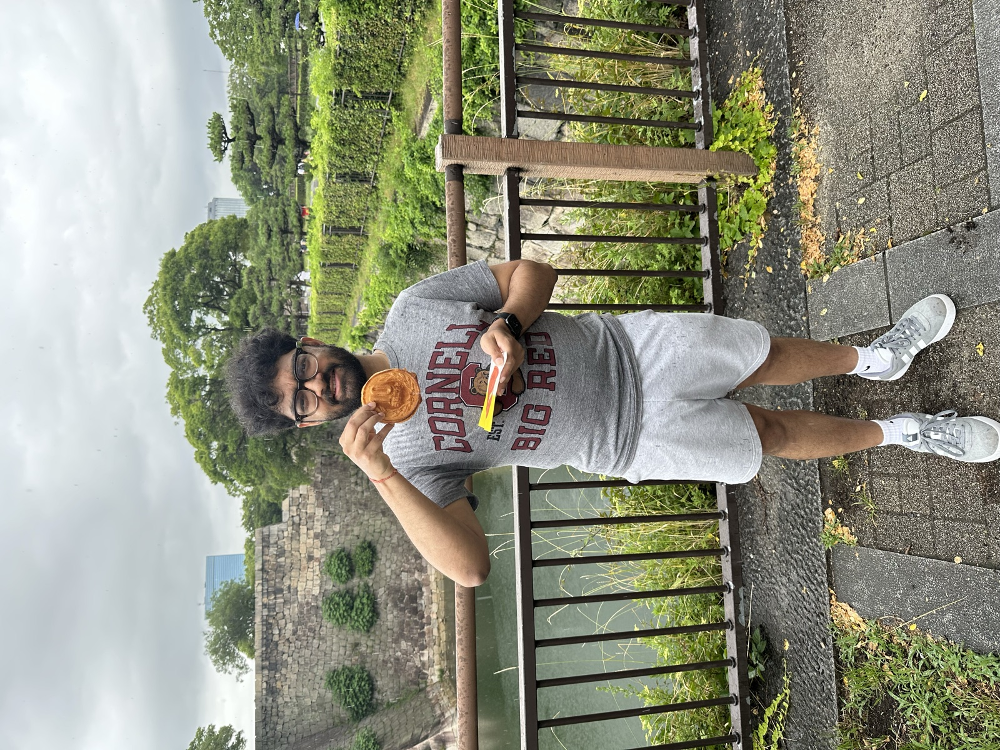 By the moat at Osaka Castle, Japan enjoying a famous 10-yen coin cheese bread. 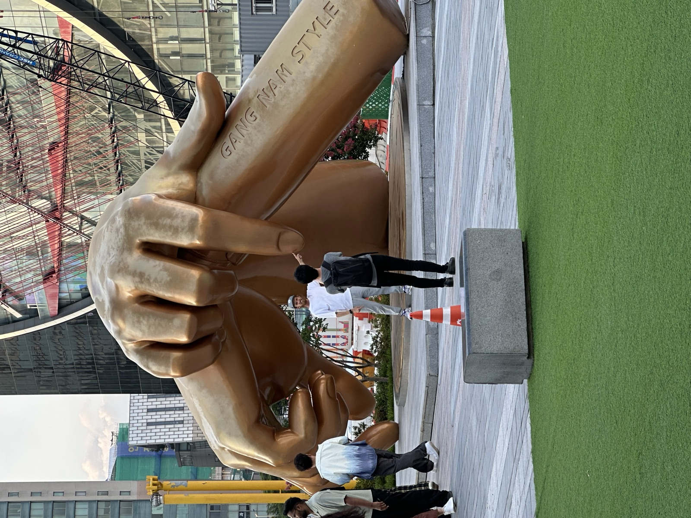 Near the giant sculpture in Gangnam, Seoul. Graduation Undergraduate Commencement at UC Berkeley. 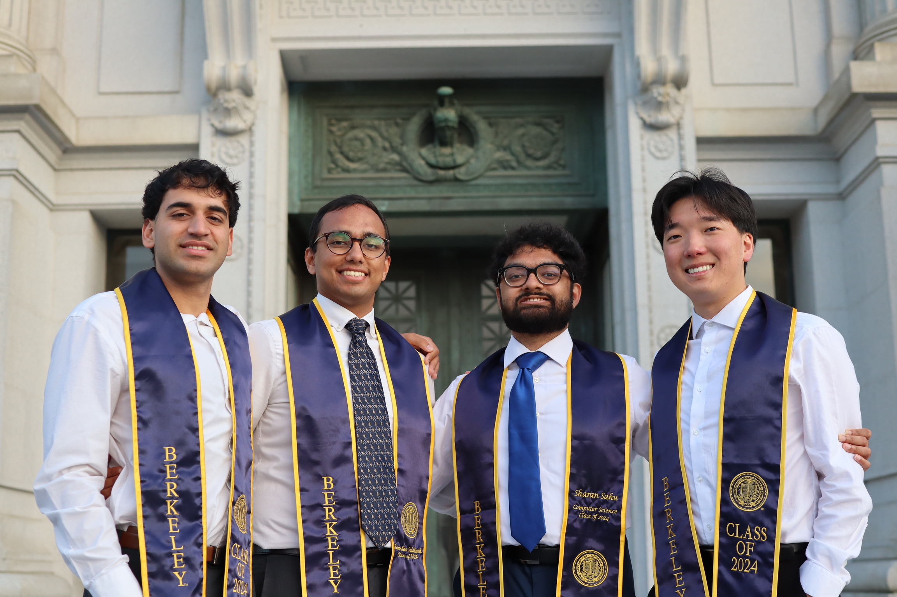 With friends at UC Berkeley Commencement.